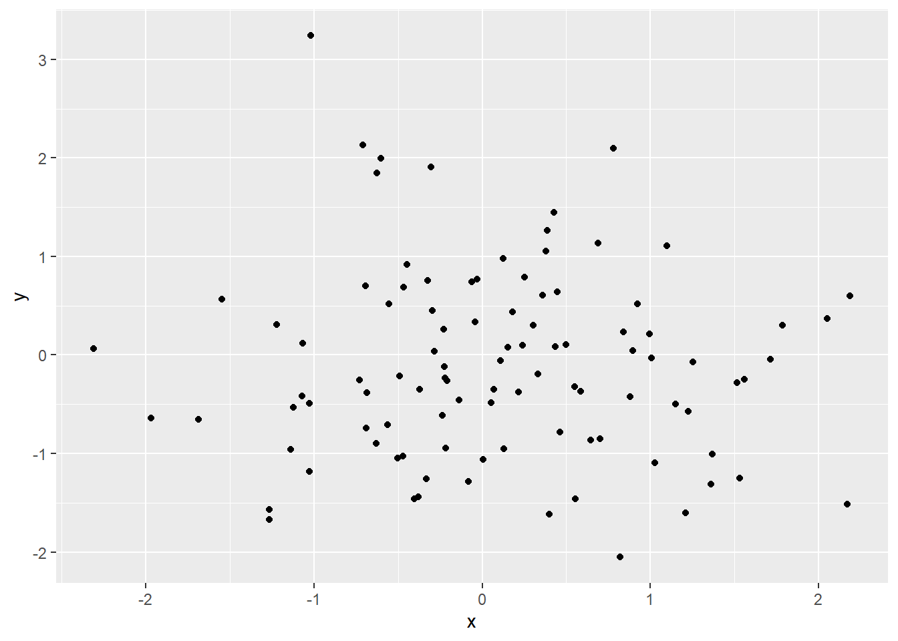
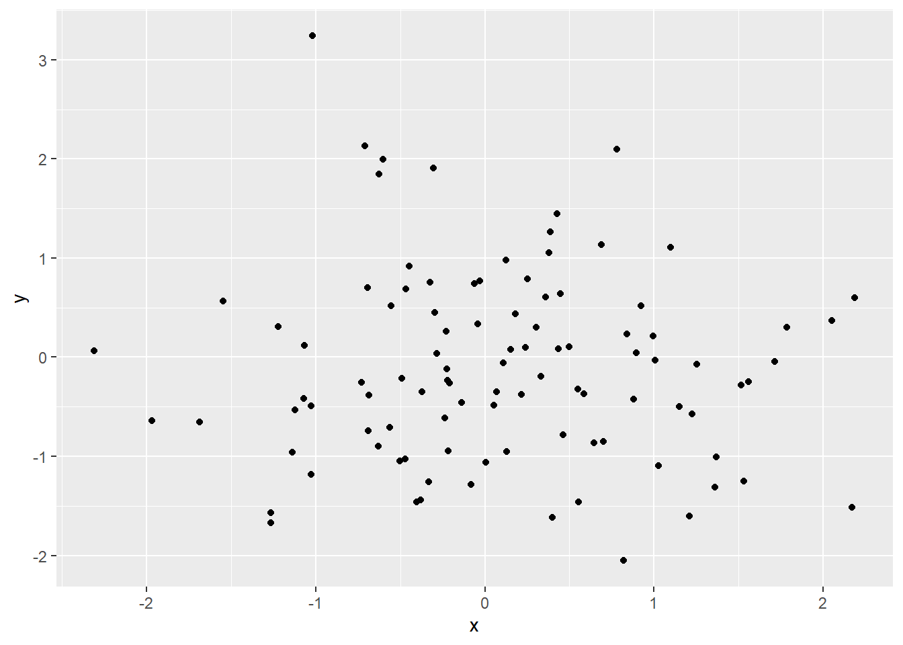
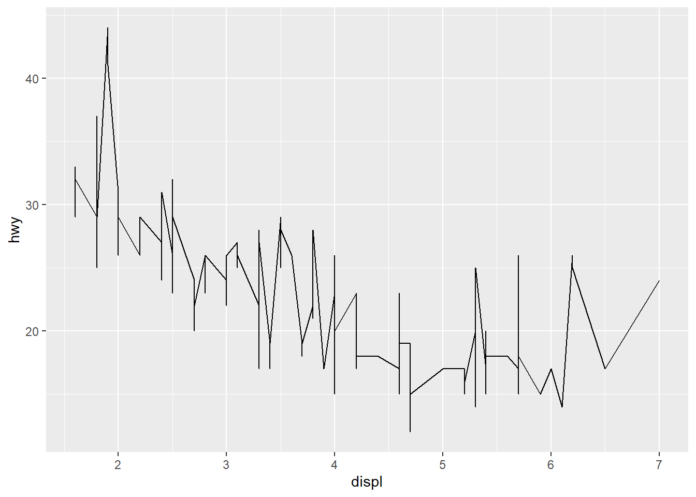
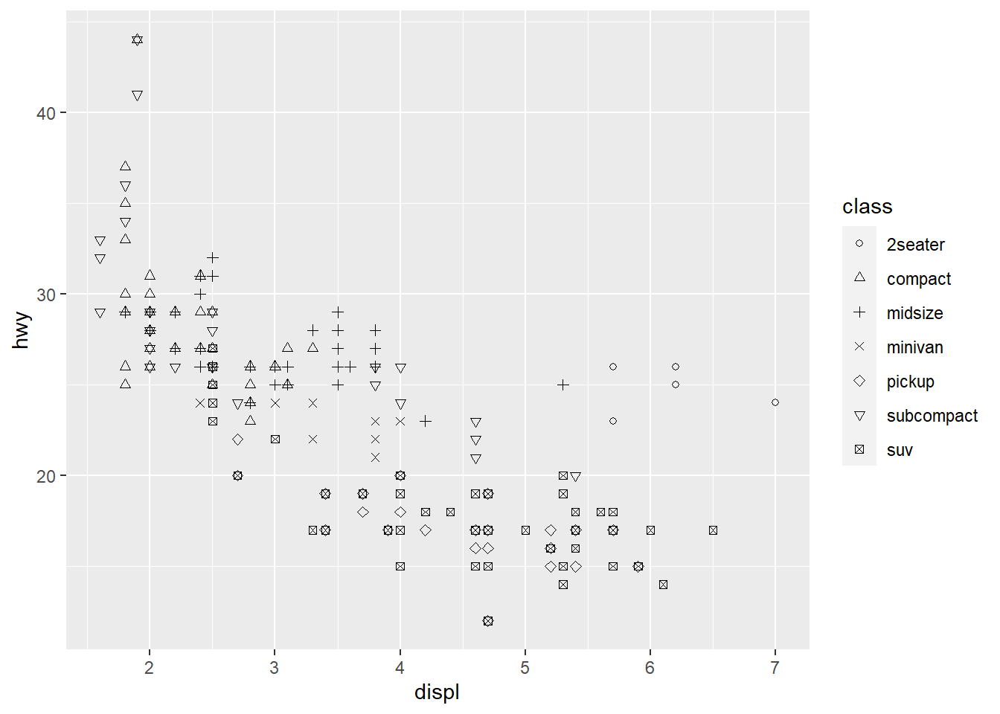
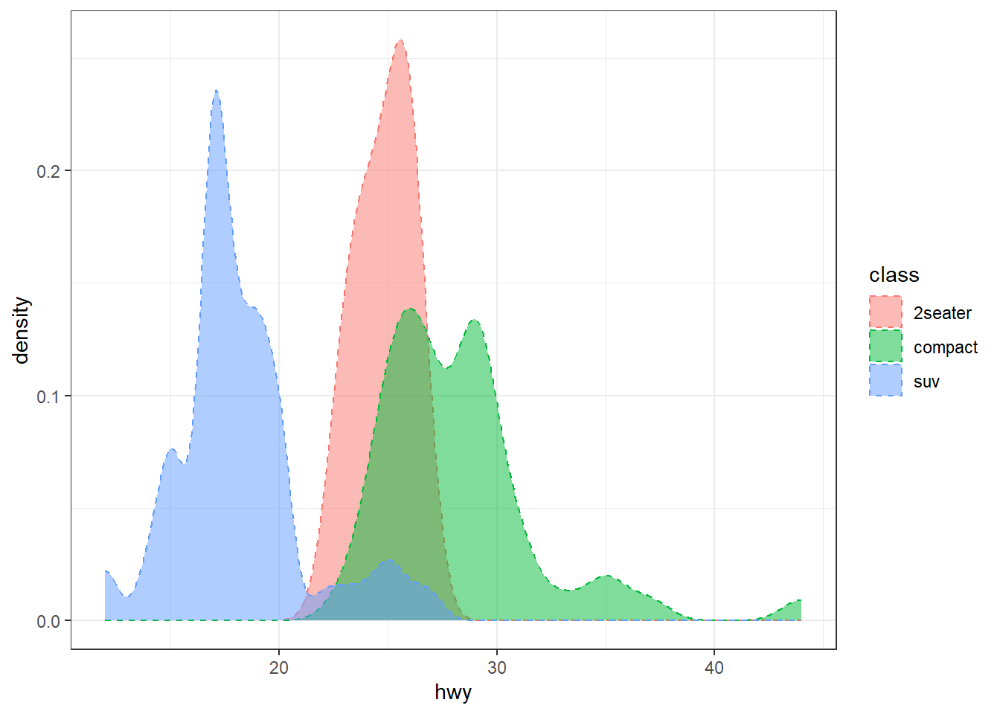
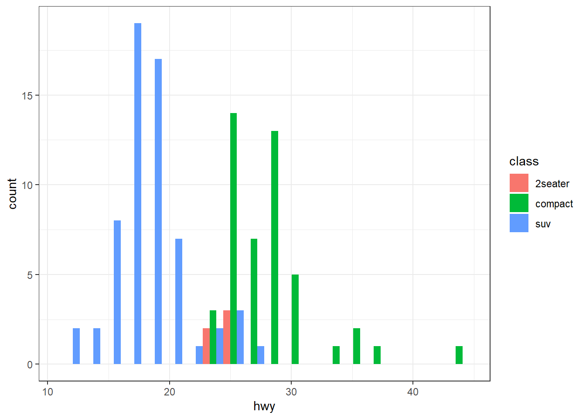
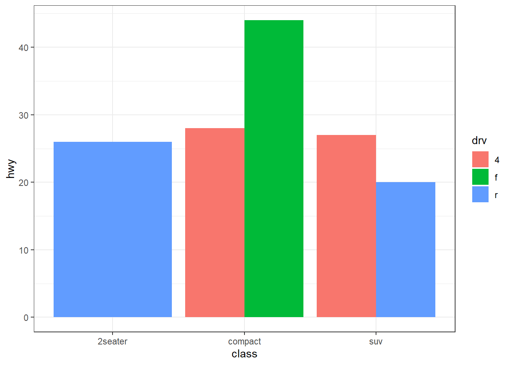
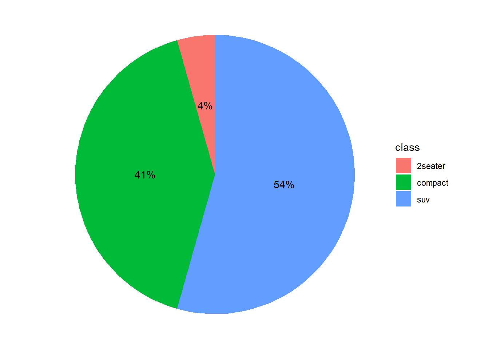

Code
library(ggplot2)
#create a random scatter plot
set.seed(123)
df <- data.frame(x = rnorm(100), y = rnorm(100))
ggplot(df, aes(x, y)) + geom_point()
Data visualization
Different features of data and differnt focuses of visualization require different visualization softwares
There are several R packages to produce static visualizations.
ggplot2 is a popularized package for static visualization. This is the library that we will be using this semester.plot is a basic function for static visualizationigraph creates graphs (as representations of network data such as friendship networks)
networkx packageggdendro creates dendrograms and tree diagrams for clustering tasksggmpap visualizes data frames over maps (e.g. crime data over a map of the US)library(ggplot2)
#create a random scatter plot
set.seed(123)
df <- data.frame(x = rnorm(100), y = rnorm(100))
ggplot(df, aes(x, y)) + geom_point()
There are also R packages for dynamic data visualizations
plotly which visualizes data frames dynamicallygganimate which visualizes data frame dynamically.These packages and those mentioned in the previous slide are somehow connected with and based on ggplot2.
The below plot is created using plotly
library(plotly)
library(gapminder)
p <- gapminder %>%
filter(year==1977) %>%
ggplot( aes(gdpPercap, lifeExp, size = pop, color=continent)) +
geom_point() +
theme_bw()
ggplotly(p)The elements involved in a ggplot2 plot are:
These elements will be integrated via ggplot2 grammar
In short:
ggplot2The mpg data frame comes with ggplot2 and will be used to illustrate the grammar of graphics.
head(mpg)# A tibble: 6 × 11
manufacturer model displ year cyl trans drv cty hwy fl class
<chr> <chr> <dbl> <int> <int> <chr> <chr> <int> <int> <chr> <chr>
1 audi a4 1.8 1999 4 auto(l5) f 18 29 p compa…
2 audi a4 1.8 1999 4 manual(m5) f 21 29 p compa…
3 audi a4 2 2008 4 manual(m6) f 20 31 p compa…
4 audi a4 2 2008 4 auto(av) f 21 30 p compa…
5 audi a4 2.8 1999 6 auto(l5) f 16 26 p compa…
6 audi a4 2.8 1999 6 manual(m5) f 18 26 p compa…Plot displ vs hwy with geom_point().
p1 <- ggplot(data = mpg) +
geom_point(mapping = aes(x = displ, y = hwy))
p1
p1 is the handle for the plotgeom_point() is “point”, which results in a scatter plotmapping = aes maps displ and hwy to x and y respectivelyggplot(mpg) +
geom_line(mapping = aes(x = displ, y = hwy))
geom_line which results in a line plotThe basic structure of a ggplot2 command is:
ggplot(data = <DATA>) +
<GEOM_FUNCTION>(mapping = aes(<MAPPINGS>))Using the mpg dataset we will illustrate several instances of elementary visualization.
For this section we’re only going to focus on a few variables in the mpg dataset.
mptmp <- mpg %>% select(displ, hwy, drv, class)
head(mptmp)# A tibble: 6 × 4
displ hwy drv class
<dbl> <int> <chr> <chr>
1 1.8 29 f compact
2 1.8 29 f compact
3 2 31 f compact
4 2 30 f compact
5 2.8 26 f compact
6 2.8 26 f compactConvert character variables in mpg into factors by using dplyr::mutate_if()
mpg = mpg %>% dplyr::mutate_if(is.character, as.factor)
class(mpg$class)[1] "factor"p1
#plot displ vs hwy where each class is a different color
p1a <- ggplot(mpg) +
geom_point(mapping = aes(x = displ, y = hwy, color = class))
p1a
#plot displ vs hwy where each class is a different shape
p1b <- ggplot(mpg) +
geom_point(mapping = aes(x = displ, y = hwy, shape = class))
p1bWarning: The shape palette can deal with a maximum of 6 discrete values because
more than 6 becomes difficult to discriminate; you have 7. Consider
specifying shapes manually if you must have them.Warning: Removed 62 rows containing missing values (`geom_point()`).
since there are more than 6 class levels but shape values are not manually provided. Namely, unless otherwise specified, only 6 default shapes are used
this can be resolved like so
p1b <- ggplot(mpg) +
geom_point(mapping = aes(x = displ, y = hwy, shape = class)) +
scale_shape_manual(values = 1:length(unique(mpg$class)))
p1b
p1b + xlab("Engine Displacement") + ylab("Highway MPG") +
ggtitle("Efficiency") + theme(plot.title = element_text(hjust = 0.5))
Axis labels and title should all be characters or strings.
The command theme(plot.title = element_text(hjust = 0.5)) centers the title.
Density plots can be used to:
#plot the density of hwy for compact, suv, and 2seater cars
mpg1 <- mpg %>% filter(class %in% c("compact", "suv", "2seater"))
p2 <- ggplot(mpg1, aes(x = hwy, color = class, fill = class)) +
geom_density(linetype = "dashed", alpha = 0.5) +
theme_bw()
p2
Create a histogram for hwy of 3 classes of cars (using mpg1 from the density plot)
p2c <- ggplot(mpg1, aes(x = hwy, fill = class)) +
geom_histogram(bins = 20, position = "dodge") +
theme_bw()
p2c
Boxplot, also referred to as the box-and-whisker plot, does not present full distributional information as a density plot. But it can be used to visually check:
p3 <- ggplot(mpg1, aes(x = class, y = hwy)) +
geom_boxplot() +
theme_bw() +
stat_summary(fun.y = mean, geom = "point", shape = 18, size = 3)Warning: The `fun.y` argument of `stat_summary()` is deprecated as of ggplot2 3.3.0.
ℹ Please use the `fun` argument instead.ggplotly(p3)A bar plot represents a quantity of interest via the height of a bar.
p4 <- ggplot(mpg1) +
geom_bar(aes(x = class, y = hwy, fill = drv), stat = "identity", position = "dodge") +
theme_bw()
p4
Notice how 2seater only has one bar. This is because in the dataset, 2seater cars only have r drive.
mpg0 <- mpg1 %>% filter(class == "2seater")
unique(mpg0$drv)[1] r
Levels: 4 f rlibrary(scales) #this library helps scale data
mpg2 <- mpg1 %>% group_by(class) %>%
dplyr::count() %>% ungroup() %>%
mutate(percentage= `n` / sum(`n`)) %>%
dplyr::arrange(desc(class))
mpg2$labels <- scales::percent(mpg2$percentage)
mpg2# A tibble: 3 × 4
class n percentage labels
<fct> <int> <dbl> <chr>
1 suv 62 0.544 54%
2 compact 47 0.412 41%
3 2seater 5 0.0439 4% pie <- ggplot(mpg2) +
geom_bar(aes(x = "", y = percentage, fill = class), width = 1, stat = "identity") +
coord_polar("y", start = 0) +
theme_void() +
geom_text(aes(x = 1, y = cumsum(percentage) - percentage / 2, label = labels))
# geom_text adds text as labels to a plot
# cumsum() computes the cumulative 'percentage'
# "Labels" are used to label the proportions
pie
coord_polar() is used to create a polar coordinate system, turning the bar plot into a pie charttheme_void() removes the background and axesgeom_text() adds text as labels to a plot